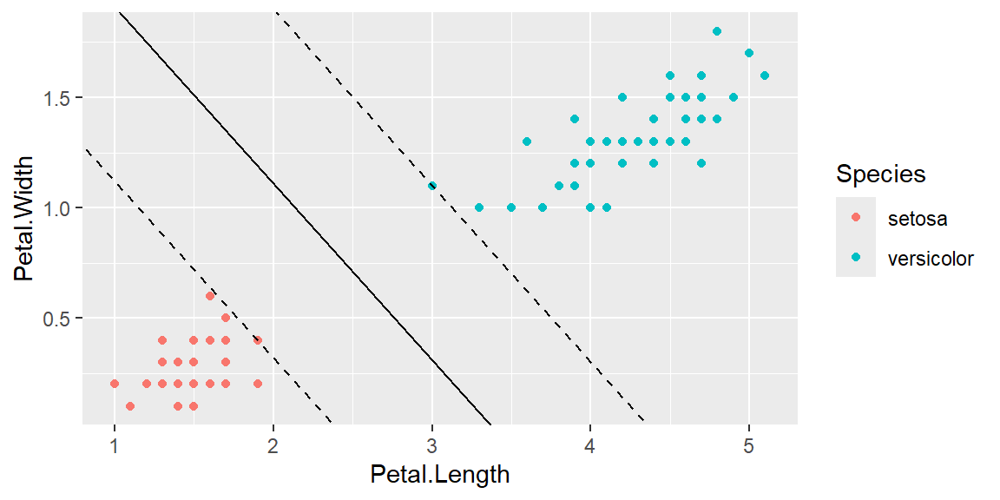

“Everyone has a plan ’till they get punched in the mouth.” - Mike Tyson
Miami defensive lineman Warren Sapp pressures Florida State quarterback Charlie Ward during a game on Oct 3, 1992. Miami would win 19-16 and the game became known as “Wide Right II” after a missed 39-yard field goal in the final seconds.
Support Vector Machines (SVMs) stand out as a class of powerful and versatile machine learning models. Originating from the idea of finding the optimal hyperplane that separates different classes in a dataset, SVMs employ a unique approach known as the large margin classification. This approach is not only about drawing a boundary between classes but ensuring that the separation is as wide as possible, thereby creating a “margin.” The data points closest to this hyperplane, called support vectors, are critical as they directly influence the position and orientation of the hyperplane. This methodology enables SVMs to achieve high accuracy, especially in cases where the boundary between different classes is not immediately clear or linear.
Classification, Regression, and Beyond
While SVMs are traditionally associated with classification tasks, their application extends far beyond. They are equally adept at handling regression problems through the concept of SVM regression, where the goal shifts to fitting as many data points as possible within the margin while controlling for margin violations. Furthermore, SVMs have shown effectiveness in outlier detection, where they help identify data points that are significantly different from the rest of the dataset. This versatility makes SVMs an invaluable tool in the machine learning toolkit, capable of addressing a wide range of problems across different domains.
Dealing with Complex and Small-to-Medium Datasets
SVMs excel in scenarios involving complex datasets that may not be linearly separable. Through the use of kernel tricks and the addition of polynomial or similarity features, SVMs can transform these datasets into higher-dimensional spaces where linear separation becomes possible. This ability to handle non-linearity, coupled with SVMs’ sensitivity to feature scaling, underscores the importance of preprocessing and parameter tuning in the application of SVMs. While they are particularly suited for small-to-medium sized datasets, careful consideration of computational resources and algorithmic complexity is necessary when scaling up to larger datasets.
15.1 Linear SVM Classification
Linear Support Vector Machine (SVM) Classification is a powerful method in machine learning that aims to find the optimal hyperplane which separates different classes in a dataset with the widest possible margin, hence ensuring robust classification boundaries. This section elaborates on the concept using the iris dataset as an example. This famous data set gives the measurements in centimeters of the variables sepal length and width and petal length and width, respectively, for 50 flowers from each of 3 species of iris. The species are Iris setosa, versicolor, and virginica.
Let’s first only consider the features petal length and petal width. We will also only focus on binary classification. First, let’s consider only the species setosa and versicolor.
In this example, there is a clear separation of the two species in terms of the features petal length and petal width. A linear SVM tries to find a line that will separate the two classes. In this example, there are a lot of lines that would do this. However, if you have a line that is too close to the versicolor class, then when we have new observations that we want to predict, we are more likely to have some that would cross that line and be missclassified as setosa.
If we were to move to line too close to the setosa group, then we are more likely to have a new observation that would be missclassified as versicolor. So we need a line that will be somewhere in the “middle”. That is, we want the line that stays as far away from the closest training instances as possible.
An SVM classifier can be visualized as creating the broadest possible “street” (denoted by parallel dashed lines) separating the classes, a process known as large margin classification.

There are other lines that would give us this “street” that would separate the classes, however, the margin (width) of this street will be smaller like below.
When we have a narrower street, then we have a higher chance of missclassifying observations when we have new data. Thus, our goal is to make the street as wide as possible. The middle solid line is then the decision boundary. Any new observation on the side closest to the blue points would be classified as versicolor and any observation on the other side of that line would be classified as setosa.
Note that incorporating additional training observations away from the “street” does not impact the decision boundary; it is entirely shaped by (or “supported” by) the samples situated on the street’s edge. These particular samples are known as the support vectors.
Soft Margin Classification
Imagine we have a situation where there is no clear separation in the two classes. Or perhaps we have an outlier like in the example below.
We would not be able to find a “street” that would separate these classes. When we enforce a rule requiring all data points to be off the street and positioned on the correct side, this approach is termed hard margin classification. However, hard margin classification encounters two primary challenges. The first challenge is that it demands the data to be linearly separable for effective application. The second challenge is its vulnerability to outliers, meaning that even a few anomalous data points can significantly impact the classification outcome.
To circumvent these problems, it’s beneficial to adopt a more adaptable approach. The goal is to strike an optimal balance between maximizing the width of the street and minimizing margin violations, which occur when observations land in the middle of the street or on the incorrect side. This approach is known as soft margin classification.
The balance between the width of the street and the margin violations is governed by the hyperparemeter \(C\). If \(C\) is to large, the street becomes too narrow but with few margin violations. If \(C\) is too small, then the street is too wide which results in a lot of margin violations. We will need to tune this hyperparameter. That is, try different values of \(C\) and find which one does the best job at predicting new observations.
15.1.1 Feature Scaling
In the context of SVMs, the importance of feature scaling cannot be overstated. SVMs are sensitive to the scale of the features because the aim is to maximize the margin between classes. If one feature dominates because of its larger scale, the SVM might not perform effectively. Hence, preprocessing steps involving normalization or standardization of features are crucial.
Example: Linear SVM Classification with the Iris Dataset Using tidymodels
To illustrate linear SVM classification using the tidymodels framework in R, we will focus on classifying two species of the iris dataset: virginica and versicolor.
Loading the Dataset and Preprocessing
First, we load the iris dataset and filter it to only include the two species of interest: virginica and versicolor (instead of setosa and versicolor above). We then split the dataset into a training set and a testing set to evaluate the model’s performance. We also will setup the training data to do cross validation to tune the hyperparameter $C4.
library(tidymodels)library(tidyverse)data(iris)# Filter the datasetiris_filtered=iris|>filter(Species%in%c("versicolor", "virginica"))|>mutate(Species =factor(Species))# Create a data splitset.seed(123)data_split=initial_split(iris_filtered, prop =0.75)train_data=training(data_split)test_data=testing(data_split)dat_folds=vfold_cv(train_data, v =5, strata =Species)
Below is a plot of these species in the training data in terms of petal length and petal width. When we fit this model, we will use all four features (sepal width, sepal length, petal width, and petal length).
train_data|>ggplot(aes(x =Petal.Length,y =Petal.Width, color =Species))+geom_point()
When we incorporate all four features, we can do a better job at predicting, however, it becomes difficult to visualize what the “street” look like. Instead of lines, the street is made up of hyperplanes which we cannot visualize.
Specifying the Model and Preprocessing Steps
We specify a linear SVM model using svm_linear() from the parsnip package, which is part of the tidymodels framework. The \(C\) hyperparameter is called cost in the svm_linear function. We will tell the model that we want to tune this hyperparameter. Additionally, we define preprocessing steps, including feature scaling, to ensure that all features contribute equally to the model.
# Specify the modelsvm_model=svm_linear(cost =tune())|>set_engine("kernlab")|>set_mode("classification")# Preprocessingrecipe=recipe(Species~., data =train_data)|>step_normalize(all_predictors())
Tune the Model
We will setup a grid of possible values of \(C\) to try. The function grid_regular checks from -10 to 5 on the log base 2 scale. That is, it checks from \(2^{-10}=0.00098\) to \(2^5 = 32\). The values of levels tells the function how many equally spaced values on this interval to check.
We then pass this tuning grid along with the 5-folded data to a workflow that includes the recipe and the model. We will find the value of \(C\) that maximizes accuracy
#setup the possible values of C to checktuning_grid=grid_regular(cost(), levels =20)tune_results=tune_grid( object =workflow()|>add_recipe(recipe)|>add_model(svm_model), resamples =dat_folds, grid =tuning_grid)best_params=select_best(tune_results, metric ="accuracy")best_params
Truth
Prediction versicolor virginica
versicolor 12 0
virginica 1 12
This example demonstrates how to implement linear SVM classification using the tidymodels framework in R, focusing on the nuances of dealing with a subset of the iris dataset. Through this example, we see the robustness of SVM in creating a model that effectively separates the two chosen species based on their feature measurements, underscoring the importance of feature scaling and model specification in the process.
15.2 Nonlinear SVM Classification
For datasets that are not linearly separable, SVMs can be extended to perform nonlinear classification. By adding polynomial features or using similarity features, datasets can often be transformed into a linearly separable form. We will discuss methods to handle nonlinear datasets, including using polynomial features and the kernel trick, which allows for operating in a high-dimensional space without explicitly computing the coordinates of the data points in that space.
15.2.1 Introduction to Kernel Trick
The kernel trick is central to enabling SVMs to perform complex nonlinear classifications. This technique involves mapping input features into high-dimensional spaces where the data points that are not linearly separable in the original space might become linearly separable. Crucially, the kernel trick does this mapping without explicitly computing the coordinates in the high-dimensional space, thereby avoiding the computational complexity that such calculations would entail. Common kernels include:
Polynomial Kernel: Adds polynomial features of a given degree. This kernel is powerful for capturing the interaction between features up to a specific degree.
Radial Basis Function (RBF) or Gaussian Kernel: Considers all possible polynomials of all degrees, giving more weight to the features that are closer to the target. This kernel is particularly effective for cases where the relationship between the class boundaries is not only nonlinear but also varies in complexity across the dataset.
Sigmoid Kernel: Mirrors the use of sigmoid functions in neural networks and can transform the feature space in ways that are beneficial for certain types of datasets.
Advantages of Kernel SVM
The primary advantage of using kernel SVMs lies in their flexibility and ability to handle real-world data that often display complex patterns and nonlinear relationships. Kernel SVMs can capture intricate structures without requiring a massive increase in computational resources typically associated with high-dimensional space mapping.
Choosing the Right Kernel
The choice of kernel significantly affects the model’s performance. No single kernel universally outperforms others across all tasks; the decision is highly data-dependent. Cross-validation can help in selecting the best kernel and its parameters for a given dataset.
Polynomial kernels are suitable when the relationship between variables is expected to be polynomial.
RBF kernels are a good default when there is little prior knowledge about the data.
Sigmoid kernels can be useful but are less commonly used than RBF or polynomial kernels.
15.2.2 Parameter Tuning in Kernel SVM
Two critical parameters in kernel SVMs are \(C\) (the regularization parameter) and the kernel-specific parameter (like degree in polynomial kernels or \(\gamma\) in RBF kernels). The parameter \(C\) controls the trade-off between achieving a low training error and a low testing error (generalization), whereas kernel-specific parameters control the shape of the boundary.
Below are examples of different hyperparameter values using RBF kernels.
15.2.3 Implementing Nonlinear SVM
When implementing nonlinear SVMs, the process typically involves several key steps:
Feature Preprocessing: Scaling features to a similar scale is crucial because kernel SVMs are sensitive to the feature scales.
Model Selection: Choosing between different SVM kernels based on the problem at hand and the nature of the data.
Cross-Validation: Employing cross-validation techniques to fine-tune hyperparameters (such as \(C\), kernel parameters like degree for polynomial kernel, or \(\gamma\) for the RBF kernel) is essential for balancing the model’s complexity with its ability to generalize to unseen data.
Evaluation: Assessing the model’s performance using appropriate metrics (like accuracy, precision, recall, F1 score for classification tasks) on a validation set not seen by the model during the training phase.
Application: Once tuned and evaluated, the model can be applied to new, unseen data for prediction tasks.
Challenges and Considerations
While nonlinear SVMs are powerful, they come with their own set of challenges and considerations:
Computation Cost: The computational complexity can be higher than for linear models, especially for large datasets and complex kernels.
Model Interpretability: The decision boundaries created by nonlinear SVMs can be difficult to interpret compared to linear SVMs.
Overfitting Risk: There is a higher risk of overfitting, especially with very flexible models like those using high-degree polynomial kernels or small \(\gamma\) values in RBF kernels. Regularization and proper parameter tuning are vital to mitigate this risk.
15.3 SVM Regression
SVMs can also be applied to regression problems by reversing the objective: instead of trying to maximize the margin while keeping the instances outside the margin, SVM regression attempts to fit as many instances as possible within the margin while limiting margin violations. This approach is known as (\(\epsilon\))-insensitive loss, where the model tries to find a line that captures as many instances as possible within a specified margin.
Here’s an example demonstrating how to use SVM Regression with the tidymodels framework in R, specifically applied to the diamonds dataset. We’ll predict the price of diamonds based on their features such as carat, cut, color, and clarity.
Prepare the Data
The diamonds dataset is available in the ggplot2 package. We’ll use a subset of the dataset to make the training process faster for this example.
data("diamonds", package ="ggplot2")set.seed(123)diamonds_sample=diamonds|>sample_n(size =2000)# Split the data into training and testing setssplit=initial_split(diamonds_sample, prop =0.75)train_data=training(split)test_data=testing(split)
Define the Recipe
rec=recipe(price~carat+cut+color+clarity, data =train_data)|>step_dummy(all_nominal_predictors())|>step_normalize(all_numeric_predictors())
Specify the Model
We’ll use an SVM model for regression. The svm_rbf() function from the parsnip package is suitable for this task. The RBF (Radial Basis Function) kernel is commonly used for non-linear regression problems.
We’ll use cross-validation to tune the hyperparameters of the model.
# Create a 5-fold cross-validation objectfolds=vfold_cv(train_data, v =5)# Create a grid for tuninggrid=grid_regular(cost(range =c(-5, 2)),rbf_sigma(range =c(-5, 2)), levels =5)# Tune the modeltune_res=tune_grid( object =workflow()|>add_recipe(rec)|>add_model(svm_mod), resamples =folds, grid =grid)# Select the best hyperparametersbest_params=select_best(tune_res, metric="rmse")best_params